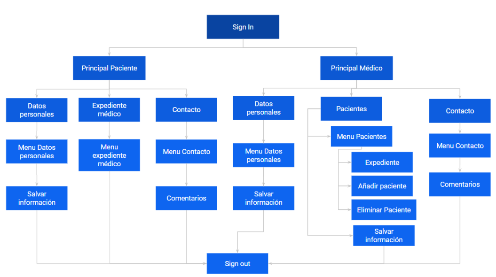

PROBLEMÁTICA:
Acorde a la Ley General de Protección de Datos Personales en Posesión de Sujetos Obligados, pueden ejercer el derecho de Acceso, Rectificación, Cancelación u Oposición de sus datos personales o médicos que se encuentren en posesión de las dependencias y entidades de la Administración Pública Federal mediante la solicitud del trámite de los derechos ARCO. Con este trámite desde 2003 los pacientes han utilizado la ley para obtener copia íntegra de sus expedientes clínicos haciendo invalida la Normatividad (NOM 168-SSA1-1998) que sólo garantizaba el acceso a un resumen y no a la historia clínica completa.
En los últimos dos años se vivió una difícil etapa debido al virus SARS-CoV-2 (COVID-19), en el cual desafortunadamente hubo varias hospitalizaciones y con esto se pudo observar que mucha gente no tenía su expediente médico, lo tenía incompleto o en su caso no tenían nada generando un retraso para poder hospitalizar al paciente además de que los doctores no sabían si ya contaba con otros padecimientos, alergias, etc
Por lo tanto se manifestó un claro reflejo de un mal manejo y poca organización dentro de las instituciones de salud al momento de guardar expedientes o documentos médicos de los pacientes ya que había casos donde perdían por completo toda la información necesaria para ayudar a los pacientes o daban erróneamente medicamentos que podían generar graves efectos secundarios.
Se tomó en cuenta vivencias de familiares cercanos que comentaban que a veces olvidaban o no sabían la información médica necesaria, perdían recetas/radiografías importantes o no recordaban en que fechas habían tenido una cirugía/enfermedad grave originando que les dieran un mal diagnóstico o retraso de este.
Por estas circunstancias, OMAYA pensó que podría hacer para mejorar o erradicar este gran problema y así mejorar el servicio de salud, sin embargo, necesitamos avalar nuestro trabajo, por ello, decidimos hacer una encuesta rápida a los alumnos del CECYT 9, sus familiares y personal médico del hospital “Juárez”.
De acuerdo con la encuesta rápida sobre información médica, se denota que un gran porcentaje de personas han extraviado documentos o datos médicos de importancia; de igual manera se observó el difícil acceso u obtención a dichos documentos en diferentes situaciones, tanto cotidianas como de emergencia.
Personal Médico
|
Podemos observar que se obtuvo un 68.8% que han presentado casos de pérdida de documentos médicos. Trayendo como consecuencia la búsqueda de dichos documentos en el archivo del hospital, recabar nuevamente los documentos, reportar a trabajo social y levantar un acta, repetir estudios de laboratorio y reiniciar la conformación de un expediente físico. |
|
Podemos observar que un 87.5% de los médicos contestaron que sí tienen la información médica de los pacientes con un fácil acceso, aún hay un 12.5% que no la tiene lo cual puede ser un problema en caso de una emergencia. |
|
En esta gráfica podemos ver que las instituciones médicas tienen la información de forma física siendo más del 87% y un 25% de forma digital, lo que gran parte del tiempo es una de las causas de su extravío. |
Pacientes
|
En la gráfica, podemos observar que un 43.3 % de los pacientes sí cuentan con su información médica a la mano; sin embargo el 56.7 % de los pacientes encuestados, es decir 34/60, no cuentan con su información médica a la mano, lo cual puede ser un problema en situaciones de emergencia o al necesitar los datos ya sea en algún servicio médico institucional o en alguna cita médica.. |
|
En esta gráfica se puede observar que gran parte de los pacientes, un 86.7%, tienen su información de manera física de tal forma que puede traer como consecuencia su pérdida o daño; y el otro 33.3% cuentan con ello de forma digital, lo que facilita su acceso en cualquier momento |
|
Con respecto a la gráfica, podemos observar que un 48.3 % de los pacientes encuestados no han pérdido documentos médicos. Por otro lado, tenemos que un 51.7% de los pacientes sí han pérdido documentos médicos, lo cual es un problema si es que se llegarán nuevamente a requerir, teniendo que reportar su pérdida o para tener la información se realizan nuevamente los estudios necesarios. |
|
Aquí podemos observar que más de un 70% no ha tenido problemas con instituciones médicas, pero a pesar de eso el porcentaje que si los ha tenido, tuvieron que volver a tramitarlos y/o repetirlos. Lo cual genera un gran problema que se solucionaría teniéndolo a la mano digitalmente. |
|
Observamos que un 46.7% de los pacientes encuestados pueden dar de una manera correcta su información en caso de alguna emergencia. Por otro lado, un 16.7% no sabría dar su información y un 46.7% tal vez podría, es por eso que la aplicación brindaría la ventaja de no tener que saber la información necesaria y poder solicitarla en cualquier escenario |
|
Se puede notar que a la gran parte de los pacientes encuestados les gustaría una aplicación que los ayude a guardar su información de importancia médica, dejando unas recomendaciones como: Que sea fácil de manejar, Una organización de sus documentos por fecha de realización, Sin uso de red wifi, Enfermedades, alergias recientes, Que sea segura. Para que el uso del sitio sea fácil de usar, cómodo y confiable para los usuarios. |
SOLUCIÓN:
“MedicData” se originó a partir del estudio de nuestros alrededores, además de una serie de sucesos particulares que ocurrieron en personas cercanas a los desarrolladores del proyecto.
Es así como llega la idea de crear una aplicación que ayude a mantener segura y accesible la información médica relevante en caso de necesitarla, por lo tanto, en todo momento le será posible acceder a ella a través de un usuario, proporcionando así ayuda tanto al paciente, como al personal médico.
MAPA DE NAVEGACIÓN:
